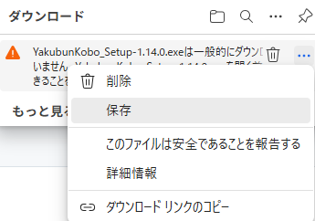
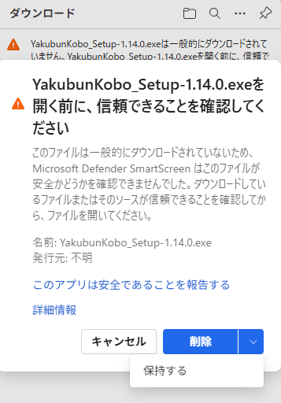
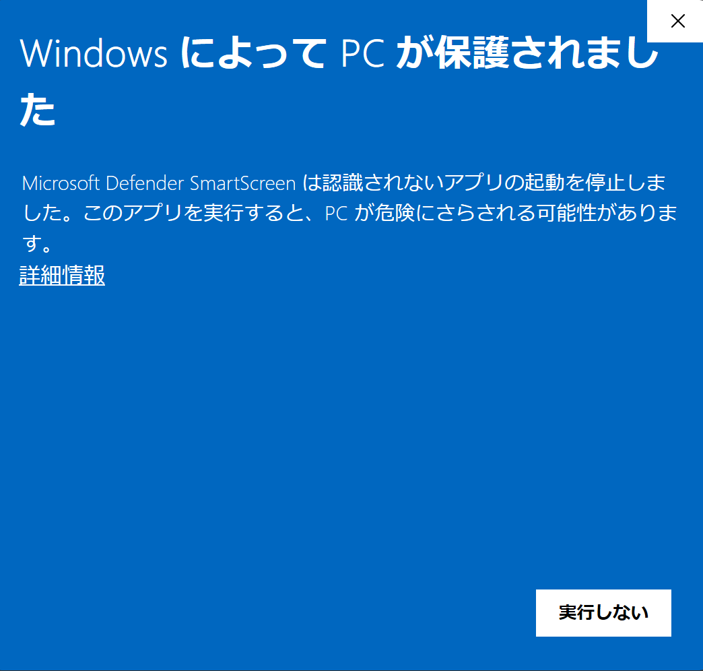
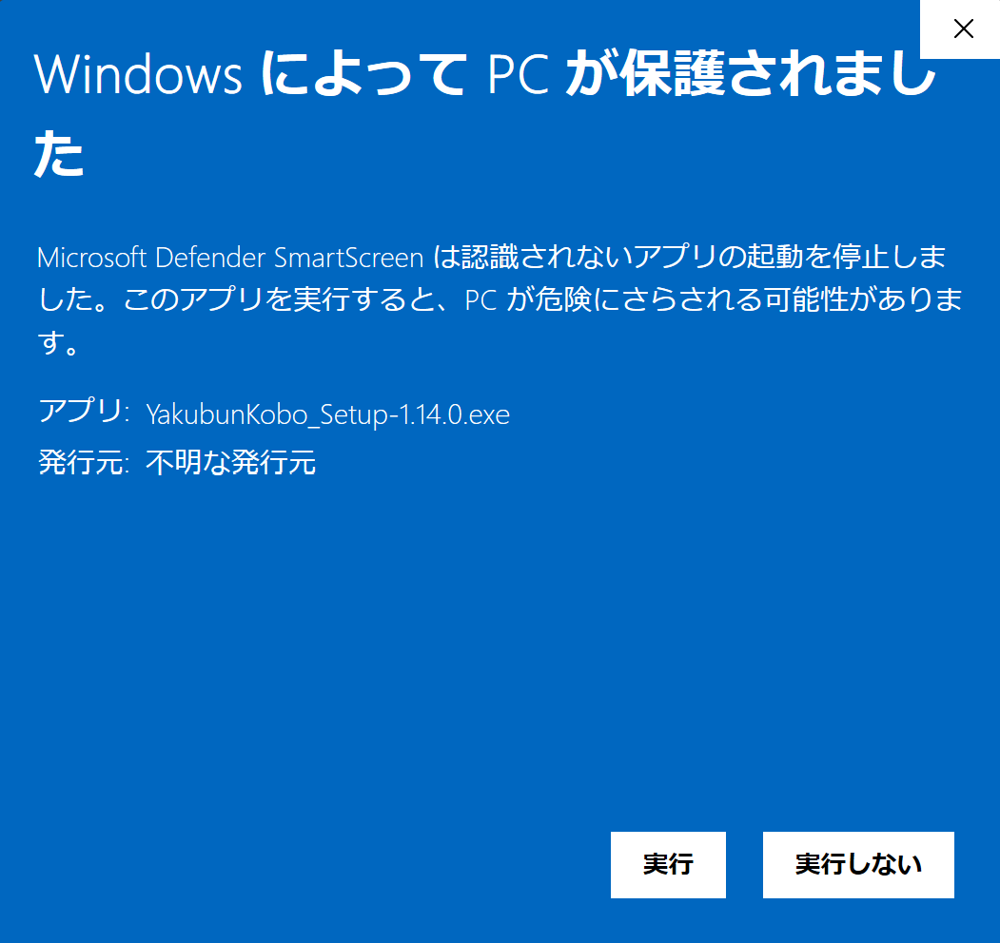

📝 ダウンロードとインストールの手順
Windowsのセキュリティ機能により、ファイルのダウンロード時や実行時に警告が表示されることがあります。
これは、アプリケーションにデジタル署名が行われていないために表示されるもので、ファイルが危険であることを意味するものではありません。
ご不便をおかけしますが、以下の手順でインストールを続行できます。
手順1: ファイルのダウンロード
お使いのブラウザによって手順が異なります。
- Microsoft Edgeの場合:
- ダウンロード後に表示される警告文の右にあるメニューアイコン  から「保存」を選択します。
- 次の画面で「削除」ボタンの右にあるメニューアイコン  をクリックし、「保持する」を選択してダウンロードを完了させます。
- Google Chromeの場合:
- ダウンロードバーに表示される警告で、ファイル名の横にある「^」をクリックし、「継続」を選択します。
手順2: インストーラーの実行
- ダウンロードした
YakubunKobo_Setup-vX.X.X.exe を実行すると、以下のような青い画面が表示されます。
「詳細情報」 をクリックしてください。

- アプリケーションの発行元やファイル名が表示されます。
「実行」 ボタンをクリックしてください。

- インストーラーが起動しますので、画面の指示に従ってインストールを進めてください。
本アプリケーションは、ユーザーのプライバシーを尊重して設計されています。